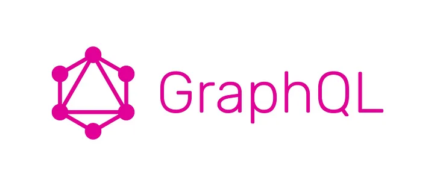
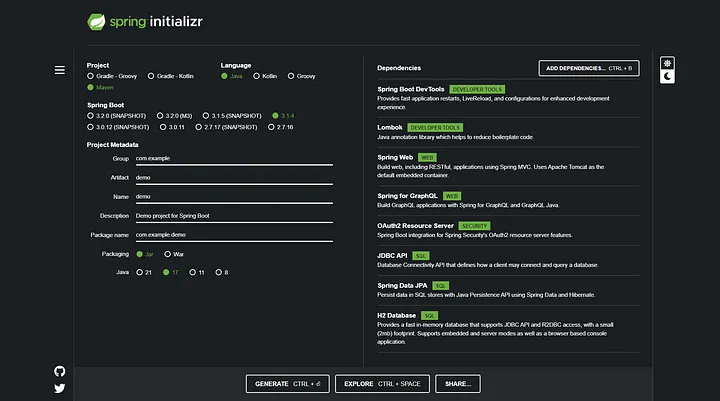

Criando uma API GraphQL com Java Spring Boot — Parte 1: Introdução
Bem-vindos ao primeiro artigo da série que te ensinará a construir uma API GraphQL com Java e Spring Boot. Mas antes de tudo o que é GraphQL?

GraphQL Logo.
O que é GraphQL?
GraphQL é uma linguagem de consulta criada pelo Facebook em 2012 e lançada publicamente em 2015. É considerada uma alternativa para arquiteturas REST, além de oferecer um serviço de runtime para rodar comandos e consumir a API.
Como o GraphQL funciona?
As consultas de GraphQL sempre retornam resultados previsíveis, com isso os clientes definem a estrutura dos dados na requisição, e a mesma estrutura dos dados é retornada do servidor, evitando assim que um excesso de dados seja retornado.
O que iremos construir?
Construiremos uma API para gerenciar tarefas de um usuário, com ações de CRUD básicas, e um sistema de autenticação e autorização.
Por onde começar?
Primeiramente, vamos ao https://start.spring.io/, lá criaremos um novo projeto Maven com Java 17, adicionaremos as seguintes dependências:
Spring Boot DevTools.
Lombok.
Spring Web.
Spring For GraphQL.
OAuth2 Resource Server.
JDBC API.
Spring Data JPA.
H2 Database.

Exemplo de Instalação.
Clique em “Generate” e extraia o arquivo que será baixado, assim teremos a base de nossa aplicação, também adicionaremos mais dependências no futuro.
Calma lá, ainda não acabamos.
Antes de terminamos deveríamos configurar a nossa aplicação para as futuras partes. Primeiramente abriremos a pasta src/main/resources, e lá apagamos o arquivo application.properties e criaremos um novo em yaml.
Nele digitaremos as seguintes configurações:
Configuração do projeto no application.yaml.
E com isso chegamos ao fim. Abaixo deixarei links relacionado ao tópico, e que ajudaram na criação do artigo.